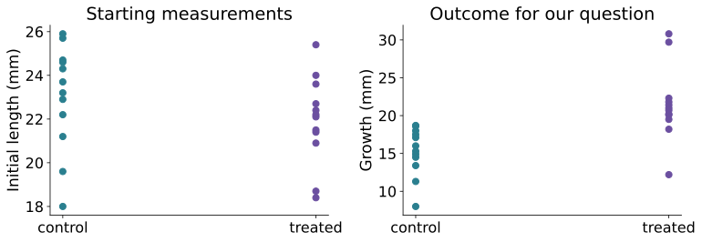
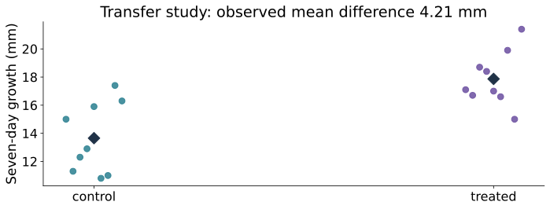

Day 16 — Independent groups and experimental design
Data Analysis in Life Sciences
About this lecture
Your descriptive report says treated seedlings grew more on average. Your supervisor asks: “More than what, by how many millimetres, measured how, and could the set-up itself have produced that?” Before any statistical test, a comparison has to be defined: the outcome, the units, the direction, and which plants count as independent. What exactly are we comparing, and what can the design support?
Name the question, outcome, unit and direction (treated − control) before calculating.
Look at the plants first: a difference in means is not a claim about every plant.
Check the design: independent groups or paired measurements? Plants or shared trays?
A sample difference is one estimate; another experiment would give another number.
Week 4 is about comparisons. Today defines the comparison; Day 17 adds how uncertain it is.
The question and the design
Does the nutrient treatment change seven-day seedling growth?
Outcome: growth = final − initial length, in mm, one value per plant.
Unit: one plant in its own pot; 12 + 12, randomly allocated.
Direction:treated − control. A positive number means treated plants grew more.
Random allocation comes from the study description, not from the order of rows in the file.
Twelve control and twelve treated seedlings in separate pots represent independent random allocations.
Choose the outcome that answers the question
Left: initial lengths. Controls started slightly larger (mean 23.0 mm vs 21.9 mm).
Right: growth over seven days, the outcome for our question.
Final length alone would mix starting size with growth.
A starting difference is worth noting as a limitation; adjusting for it is beyond this course.

Initial lengths and seven-day growth shown separately for control and treated plants; growth is the outcome for the treatment question.
Start with the observations
seedlings <-read_csv("data/seedlings.csv",show_col_types =FALSE) |>mutate(growth_mm = final_mm - initial_mm)growth_plot <-ggplot(seedlings,aes(x = treatment, y = growth_mm)) +geom_point(position =position_jitter(width =0.08, height =0, seed =16)) +labs(x ="Treatment group",y ="Growth over the study period (mm)") +theme_minimal()
The treated group sits higher, but the groups overlap.
The largest control (18.7 mm) grew more than the smallest treated plant (12.2 mm).
So “every treated plant grew more” is false, even if the treated mean is higher.
Individual growth values for 12 control and 12 treated plants; the groups overlap although treated plants tend to be higher.
Second class: 9 plants per group; control 13.66 mm, treated 17.87 mm.
Treated − control = 4.21 mm, not 6.22 mm.
Different plants and conditions give a different estimate. That alone is not evidence that the treatment “failed”.

Transfer study growth values: treated plants have a higher mean, and the observed treated-minus-control difference is 4.21 millimetres.
What we can say today, and what remains open
Results paragraph: “Treated seedlings grew a mean of 21.49 mm (SD 4.87) and controls 15.28 mm (SD 3.19), 12 plants each: a difference of 6.22 mm (treated − control). Growth overlapped between the groups.”
Still open: would another set of plants give a similar difference, or could chance alone produce 6 mm?
The null hypothesis for Day 17: the population mean growth is the same under both conditions.
Two-sided: a difference in either direction counts. We decide this now, before seeing a test.
A p-value will say how surprising our data are if the means were equal. It is not the probability that the treatment works, and not the size of the effect.
Summary
Concept
Key fact
Plan first
Question, outcome (growth, mm), unit (potted plant), direction (treated − control), before calculating
Outcome
Growth answers the question; initial length is a possible limitation (23.0 vs 21.9 mm)
Observations
Plot the plants; groups overlap, so a mean difference is not “every plant”
Difference
21.49 − 15.28 = 6.22 mm; the sign comes from the subtraction order
Independent vs paired
Different plants are independent; the same plant twice is a pair (Day 18)
Design
Shared trays → the tray is the unit; a test cannot repair the design
One estimate
Another study gave 4.21 mm; samples vary
Open question
Is 6.22 mm larger than chance variation could produce? (Day 17)
Next (Day 17, Welch test): how uncertain is the 6.22 mm difference? We add a confidence interval and a p-value, using the same treated and control vectors and the same direction.
Now:open the Day 16 exercises. Leave with comparison.Rmd, its rendered HTML, and output/day16-growth.png.